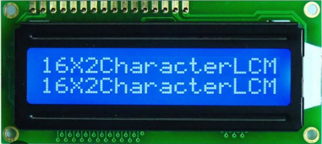

Afficheur LCD
LCD 2x16
Il existe plusieurs types et formats d'afficheurs LCD. Nous allons parler ici de l'afficheur LCD 2x16 qui affiche deux lignes de texte de 16 caractères chacune. Ces afficheurs sont largement utilisés dans les projets électroniques, les appareils domestiques et les équipements industriels en raison de leur faible consommation d'énergie, de leur facilité d'utilisation et de leur bonne lisibilité.

En réalité, même s'il n'y a que 16 caractères visibles, chaque ligne est est stockée dans une RAM de 40 caractères. Pour voir les caractères cachés, il faut faire défiler l'affichage vers la gauche
Brochage de l'afficheur 2x16

- Le bus de données D0...D7
- Les broches de control RS, RW, E
- RS (Register Select) : Cette broche permet de préciser si l'octet envoyé sur le bus de données est une commande à interpréter ou un caractère à afficher
- RW (Read/Write) : Cette broche permet de sélectionner entre les opérations de lecture (1) et d'écriture (0) vers l'afficheur. Nous allons utiliser l'afficheur en mode écriture, cette broche sera reliée en permanence à 0
- E (Enable) : Cette broche est utilisée pour indiquer à l'afficheur LCD quand une donnée ou une commande est disponible sur le bus de données.
- Les broches d'alimentation Vdd et Vss
- Vdd : 5V
- Vss : GND
- La broche de control de contrast Vee
- Les broches de rétroéclairage (Backlight Control) :
La communication avec l'afficheur se fait en parallèle octet par octet sur ce bus. Cependant, l'afficheur supporte un mode 4 bits qui utilise seulement 4 broches (D4...D7), dans ce cas, chaque octet est envoyé en deux temps
Ces broches permettent de gérer le flux de données et les commandes vers l'afficheur LCD
Cette broche permet de contrôler le contraste de l'afficheur. Il faut la connecter au point milieu d'un potentiomètre comme indiqué sur la figure plus bas dans ce document
Certains afficheurs LCD disposent d'un rétroéclairage (backlight) pour améliorer la lisibilité de l'écran dans des conditions de faible luminosité. Ces afficheurs ont deux broches supplémentaires (Anode et cathode) pour alimenter une LED de rétroéclairage. Même si ce n'est pas obligatoire, il est conseillé d'insérer une résistance de faible valeur dans le circuit d'alimentation de la LED de rétroéclairage
Jeux de caractère
L'afficheur n'utilise pas le code ASCII standard mais une version modifiée. Tous les afficheurs du commerce n'utilisent pas le même jeu de caractères, il faut faire des essais:
- Hitachi HD44780UA00 : English-Japanese -> ASCII standard, caractères japonais, quelques caractères grec et quelques symbols mathématiques
- Hitachi HD44780UA02 : English-European -> ASCII standard, caractères de l'Europe de l'ouest, quelques caractères cyrilliques et grecs
- Winstar WH1602B-TMI-ET : English-European -> ASCII standard, caractères de l'Europe de l'ouest, quelques caractères grecs et quelques symboles mathématiques
-
Exemple : Ω = 0xDE
Exemple : Ω = 0xF4
Exemple : Ω = 0x9A
La librairie LiquidCrystal
L'IDE Arduino intègre la bibliothèque LiquidCrystal qui permet d'utiliser ces afficheurs sans en connaître le fonctionnement interne. L'afficheur est utilisé en mode 4 bits ce qui permet de le contrôler avec 6 sorties de l'Arduino
- LiquidCrystal lcd(RS, E, d4, d5, d6, d7)
- Crée un objet pour commander l'afficheur LCD en mode 4 bits,
- lcd: nom l'objet. On n'est pas obligé de l'appeler lcd, on peut l'appeler ce que l'on veut
- RS: Numéro de la sortie qui commande la broche RS du LCD,
- E: Numéro de la sortie qui commande la broche E du LCD,
- d4, d5, d6, d7: Numéro des sorties qui commandent les broches D4, D5, D6, D7 du LCD,
- La broche WR de l'afficheur doit être reliée à la masse,
- lcd.begin(Nc, Nl)
- Initialise l'afficheur LCD
- Nc: Nombre de caractères par ligne
- Nl: Nombre de ligne de l'afficheur
- lcd.clear()
- Efface l'afficheur et ramène le curseur au début de la première ligne
- lcd.setCursor(col, lgn)
- Place le curseur à la position (col, lgn), les deux paramètres commencent à 0
- lcd.print(donnée,[format])
- Affiche une chaîne ou un nombre:
- lcd.print("Hello world"); // affiche la chaîne Hello World
- lcd.print(1024); // Affiche le nombre 1024
- lcd.print(85, BIN); // affiche le nombre 85 en binaire --> 1010101
- lcd.print(255, HEX); // affiche le nombre 255 en hexadécimal --> FF
- lcd.print(243.8765333); // affiche le nombre réel avec 2 chiffres à droite de la virgule
- lcd.print(243.8765333,4); // affiche le nombre réel avec 4 chiffres à droite de la virgule
- lcd.println(donnée,[format])
- lcd.write(c)
- affiche le caractère de code ASCII c
- lcd.write('X'); // affiche le caractère X
- lcd.write(65); // Affiche le caractère A
- lcd.scrollDisplayLeft()
- décaler l'affichage d'un caractère vers la gauche
- lcd.scrollDisplayRight()
- décaler l'affichage d'un caractère vers la droite
- lcd.cursor(); ou lcd.noCursor();
- Montrer ou cacher le curseur
- lcd.blink(); ou lcd.noBlink();
- Clignotement du curseur
- lcd.display(); ou lcd.noDisplay();
- Allumer ou éteindre l'afficheur. Le Content n'est pas perdu
Identique à lcd.print() mais ajoute un retour à la ligne à la fin
#include <LiquidCrystal.h>
LiquidCrystal lcd1(12, 11, 5, 4, 3, 2);
void setup() {
int N = 195;
lcd1.begin(16, 2);
lcd1.print("DEC-HEX-BIN");
lcd1.setCursor(0,1);
lcd1.print(N);
lcd1.write('-');
lcd1.print(N,HEX);
lcd1.write('-');
lcd1.print(N,BIN);
}
void loop() {
}
Afficheur LCD avec module I2C
Le module d'interface I2C pour afficheur LCD 2x16 permet de connecter facilement un l'afficheur à un microcontrôleur ou à une carte de type Arduino via le bus de communication I2C. Ce module simplifie la connexion en réduisant le nombre de broches nécessaires pour contrôler l'afficheur à seulement deux, SDA et SCL en plus de l'alimentation.

Le module se place derrière l'afficheur LCD et doit être soudé aux broches de celui-ci
Comme on l'observe sur la figure ci dessous :
- La connexion est très fortement simplifiée
- Le réglage de contraste est intégré au module (potentiomètre bleu)
- Le jumper permet d'alimenter ou non la LED de BackLight
- Sur certains modules, les trois Jumpers à souder A2 A1 A0 permettent de fixer l'adresse I2C du module. Si on laisse un jumper Ai intacts, on Ai = 1. Si on le soude à la masse qui est en face de lui, on Ai = 0
- L'adresse I2C (7bits) est égale à 0 1 0 0 A2 A1 A0
- Si on laisse les trois jumpers intacts=> A2=1, A1=1, A0=1 => le module répond à l'adresse I2C = 0100 111 = 0x27
Librairie LCD_I2C
Il existe une multitudes de librairies qui permettent d'utiliser l'afficheur LCD à l'aide de ce module. Pour ma part j'utilise la librairie LCD_I2C. Pour l'installer :
- Sur Arduino_IDE 2.3.x
- Sur Arduino_IDE 1.8.x
- Outils -> Gérer les bibliothèque -> attendre le téléchargement de la liste :
La librairie LCD_I2C offre les mêmes fonctions (avec les mêmes noms) que la librairie LiquidCrystal. De ce fait, les programmes sont les mêmes, il n'y a que la déclaration et l'initialisation qui changent
- LCD seul et Librairie LiquidCrystal
#include <LiquidCrystal.h>
LiquidCrystal lcd(12, 11, 5, 4, 3, 2);
void setup(){
lcd.begin(16,2);
lcd.print("Hello World !");
}
void loop() { }
#include <LCD_I2C.h>
LCD_I2C lcd(0x27, 16, 2);
void setup(){
lcd.begin();
lcd.backlight();
lcd.print("Hello World !");
}
void loop() { }